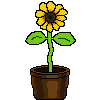

POR DESCUBRIR · 001
Girasol
Primera flor que agregué y creció gracias a ti.
0 coleccionadosUN PEQUEÑO JARDÍN PARA TI
Hice este pequeño jardín. Espero que te guste cuidar estas flores tanto como a mí me gustó dibujarlas para ti.
Si me das un tiempo, podré añadir más flores c:

En un futuro haré que se muestren distintas flores de las que te haré xDElige una maceta para empezar.
TUS MACETAS
POR DESCUBRIR · 001
Primera flor que agregué y creció gracias a ti.
0 coleccionados